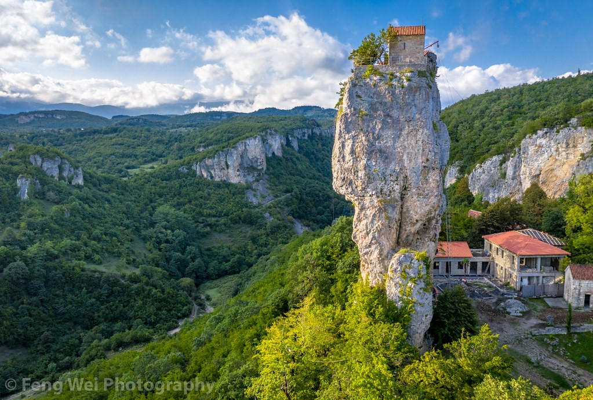

Imereti (Georgian: იმერეთი) is a region of Georgia situated in the central-western part of the republic along the middle and upper reaches of the Rioni River. Imereti is the most populous region in Georgia. It consists of 11 municipalities and the city of Kutaisi, which is the capital of the region.

In late antiquity and early Middle Ages the ancient western Georgian
kingdom of Egrisi existed on the territory of Imereti. Its king declared
Christianity as an official religion of Egrisi in 523 AD. In 975-1466
Imereti was part of the united Georgian Kingdom. Since its disintegration
in the 15th century, Imereti was an independent kingdom.
In the 17th-18th centuries, the kingdom of Imereti experienced frequent
invasions by the Turks and paid patronage to the Ottoman Empire until
1810, when it was invaded and annexed by the Russian Empire. The last King
of Imereti was Solomon II (1789-1810).
From 1918 to 1921, Imereti was part of the independent Democratic Republic
of Georgia. Within the USSR, the region was part of the Transcaucasian
SFSR from 1922–1936, and part of the Georgian SSR from 1936–1991. Since
Georgian independence in 1991, Imereti has been a region of Georgia with
Kutaisi as the regional capital.